REBOOT
미국 마케팅 AX 대시보드
마케터 한 명이 미국 시장 업무를 혼자 해낼 수 있도록, 흩어진 반복 업무를 하나의 흐름으로 묶은 업무용 대시보드
시장 조사 → 콘텐츠 제작 → 광고 문구 심의 → 파트너 협업 → 고객 응대 → 성과 보고까지, 한국어로 입력하면 미국용 결과가 나오고 모든 문구는 같은 규제 기준으로 점검됩니다.

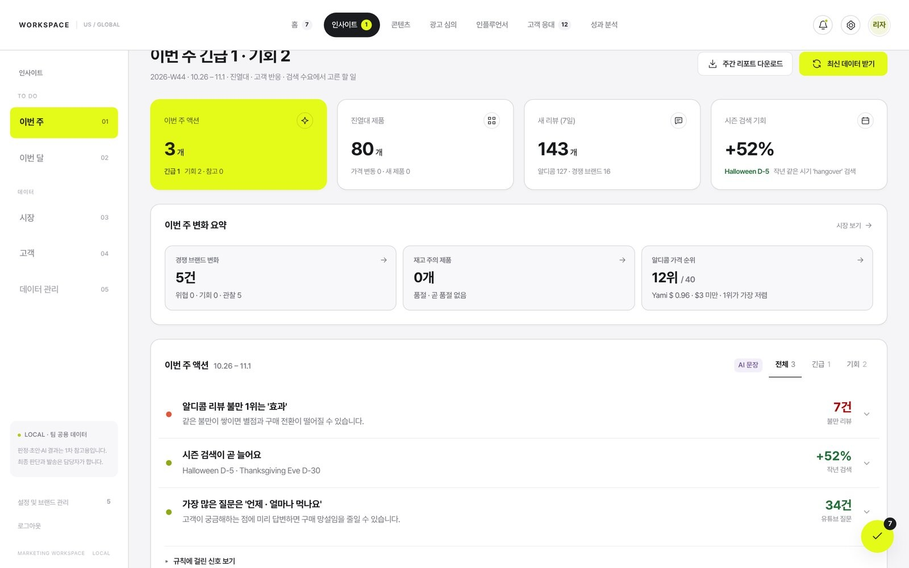
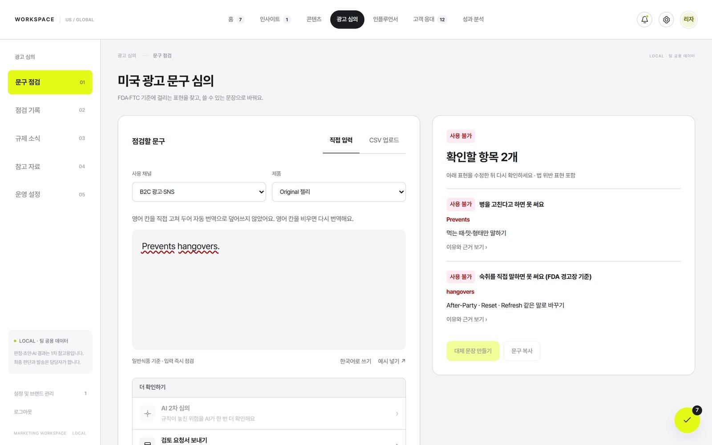
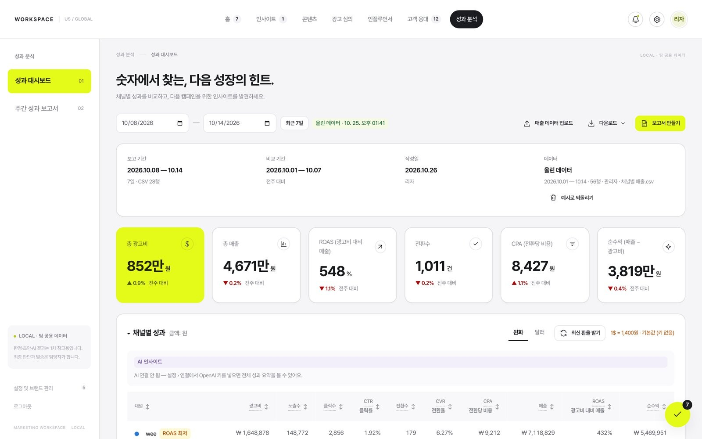
시연 영상 · 바로가기
무료 서버라 첫 접속 시 화면이 뜨는 데 최대 1분 정도 걸릴 수 있습니다.
할로윈 캠페인 업무 시연
5분 21초 · [작성 필요] 영상 링크
- 마케팅 대시보드reboot-dashboard.onrender.com ↗
IDadmin@reboot.com· PWreboot2026! - 공식 홈페이지reboot-us.onrender.com ↗
고객 계정 IDcustomer@reboot.local· PWLRtrDWWgq5W6NhBoHbT6o3Ng - 인스타그램instagram.com/reboot_us ↗
- 대시보드 GitHubhungungworld/reboot-dashboard ↗ · 공개 저장소
- 홈페이지 GitHubhyxxns0131/reboot_home ↗
※ 알디콤을 모티브로 한 가상 기업·브랜드 설정입니다. 실제 알디콤의 기업·제품 정보와 구분합니다. 화면 속 고객 문의·성과·판매 실적 중 예시 배지가 붙은 값은 시연용 가상 데이터입니다.
8개 탭 둘러보기
탭마다 대표 화면 하나씩입니다. 카드를 누르면 크게 볼 수 있어요. 탭별 자세한 설명은 아래 "탭별 상세"에 있습니다.
한눈에 보는 핵심
- 흩어진 일을 한 화면으로무엇을 판매처 3곳 · 유튜브 · 뉴스 · 규제기관 등 외부 데이터 17곳을 한 대시보드로어떻게 8개 탭이 결과를 다음 탭으로 넘겨 주는 하나의 업무 흐름
- 근거가 남는 AI무엇을 AI가 제품 사실을 지어내지 않고, 모르는 값은
확인 필요로 남김어떻게 제품 정보는 한 곳(설정 탭)에서만 관리, AI 출력은 서버가 다시 검증 - 규제는 규칙이 먼저무엇을 미국 FDA·FTC 광고 규제를 규칙 17개로 정리, FDA 경고장 원문 87개로 검증어떻게 규칙 엔진 → AI 2차 판정 → 사람이 최종 결정
- 측정한 것만 성과로무엇을 카드뉴스 제작 64.7%, 이미지 제작 52.8% 단축 (실측)어떻게 모든 숫자에 측정 조건과 검증 상태를 함께 표기
왜 만들었나
2.1 알디콤의 문제 — 좋은 제품, 지지부진한 미국 매출
- 말할 수 없는 시장FDA는 숙취를 질병 상태로 보아 "예방·치료·완화" 표현을 미승인 의약품 주장으로 단속합니다 (2020년 숙취 제품 경고장 7건). 한국의 성공 공식인 "숙취해소력" 메시지를 미국에서는 쓸 수 없습니다.
- 부족한 사람해외 담당 1명이 Amazon · Weee! · Yami · TikTok · Instagram을 동시에 운영합니다. 카피 작성 · 규제 확인 · 채널별 재작성 같은 반복 업무에 시간이 몰립니다.
- 분절된 채널Amazon(영어 검색), Weee!·Yami(이중언어), SNS(숏폼)마다 고객·형식·말투가 다릅니다.
- 낮은 인지도미국에서는 아시아계 채널 위주라 일반 소비자 인지도가 낮습니다.
2.2 우리의 사용자 — 소주주 사원
소주주 사원 · 알디콤 마케팅 2년 차 · REBOOT 미국 마케팅 담당 "저는 대체 언제 마케팅 전략을 짜죠?"
한 사람이 쇼핑몰과 SNS를 함께 맡고, 카피 · 규제 확인 · 콘텐츠 · 인플루언서 · 고객 문의까지 처리합니다. 대시보드의 모든 화면은 소주주 사원의 하루 순서에 맞춰 설계했습니다.
- 아침 현황 파악지금 막히는 점 판매 · 리뷰 · 뉴스 · 시즌을 여기저기서 모아야 함도와주는 화면 홈 › 데일리 브리핑
- 시장 · 경쟁사 확인지금 막히는 점 바빠서 매번 건너뜀, 감으로 보고하게 됨도와주는 화면 시장 · 고객 인사이트
- 채널별 콘텐츠 제작지금 막히는 점 같은 내용을 채널마다 다시 써야 함도와주는 화면 콘텐츠 제작
- 미국 광고 문구 확인지금 막히는 점 "숙취해소"를 미국에서 어떻게 말해야 할지 모름도와주는 화면 광고 심의
- 인플루언서 섭외지금 막히는 점 업체 찾기 · 영어 제안 메일 · 금지 표현 안내를 매번 새로도와주는 화면 인플루언서 · 파트너
- 고객 문의 답장지금 막히는 점 부작용 · 환불 문의를 영어로, 규제에 안 걸리게 답해야 함도와주는 화면 고객 응대
- 성과 보고지금 막히는 점 채널별 숫자를 엑셀로 정리해 보고서로 옮김도와주는 화면 성과 분석
※ 페르소나는 공개 자료를 바탕으로 팀이 설정한 가상 인물입니다.
2.3 해결 방식 — 두 가지 솔루션
- 브랜드 · 홈페이지무엇을 만들었나 REBOOT("Restart Your Day") · 검정 & 네온 · 캐릭터 Rebu. 효능 대신 "모임에서 즐기는 한국식 젤리·음료"로 포지셔닝한 공식 홈페이지어떤 문제를 푸나 말할 수 없는 효능 대신 포맷 · 맛 · 문화로 구별
- 업무 대시보드무엇을 만들었나 8개 메뉴: 홈 → 인사이트 → 콘텐츠 → 광고 심의 → 인플루언서 → 고객 응대 → 성과 분석 → 설정어떤 문제를 푸나 1인 마케터의 반복 업무 자동화 + 규제 위반 사전 차단
대시보드의 목표는 업무 효율화입니다. 자료 취합 · 카피 작성 · 규제 확인 · 채널별 재작성 · 메일 발송 같은 반복 업무를 줄이고, 아낀 시간을 시장 분석 · 파트너 섭외 · 시즌 캠페인 기획처럼 매출을 만드는 일로 돌립니다.
숫자로 보는 결과
- 8개 탭 · 하위 화면 28개관리자 5개 메뉴 그룹 · 20여 개 화면
- 외부 데이터 출처 17곳 연동 (판매처 · 규제기관 · 뉴스 등)AI 기능 6종
- 광고 규제 규칙 17개 (FDA · FTC 기준) · FDA 경고장 원문 87개로 검증대시보드 연동 데이터 파일 14종 · 토큰 인증 API
- 수집 데이터: 경쟁사 제품 80개 · 자사 리뷰 127개 · 유튜브 댓글 220개영/한 긴 상세페이지 3종 게시
- 자동 테스트 pytest 411개 + JS 테스트 3개 파일 — 모두 통과자동 테스트 80개
- 팀 협업 PR 병합 100건—
테스트 수는 2026-10-27 pre_main 브랜치(c296f91) 기준입니다.
팀과 역할
탭마다 담당자가 정해져 있고, 각자 자기 탭 폴더만 고치는 규칙으로 7일 동안 병렬 개발했습니다. 이니셜이 곧 각자의 Git 브랜치 이름입니다.
| 이니셜 | 이름 | 역할 | 맡은 부분 |
|---|---|---|---|
| JH | 소준희 | 팀장 | 광고 심의(컴플라이언스) · 고객 응대(CS) |
| HK | 이현경 | PM · 저장소 관리자 | 홈 · 시장·고객 인사이트 · 설정 · 로그인 · 공통 영역 |
| KHS | 강현서 | PM | PR 검토 · 공식 홈페이지 개발 |
| NW | 이나원 | 팀원 | 콘텐츠 제작 탭 · 대시보드 UI/UX · 인스타그램 운영 |
| HJ | 권혁주 | 팀원 | 인플루언서 · 파트너 · 성과 분석 |
이나원의 담당 부분은 대표작 첫 화면(내 역할)에서 자세히 설명합니다.
기술 스택과 구조
5.1 기술 스택
- 서버Python 3.14 · Flask 3.1 (탭별 Blueprint) · SQLAlchemy · SQLite (PostgreSQL 전환 가능)
- 로그인 · 보안Flask-Login · Flask-WTF(CSRF) · Flask-Limiter · cryptography (API 키 암호화 저장)
- 화면HTML · CSS · 바닐라 JavaScript (빌드 도구 없음) · Chart.js · marked · DOMPurify · Pretendard
- AIOpenAI (gpt-4o-mini 기본 · 이미지 모델) — 홈 · 인사이트 · 콘텐츠 · 파트너 · 성과
Anthropic Claude (claude-opus-5-5) — 광고 심의 · 고객 응대
Higgsfield (Marketing Studio · Seedance 2.0) — 콘텐츠 이미지 · 숏폼 영상 - 문서 내보내기python-docx (Word) · openpyxl (Excel)
- 배포Render (gunicorn · 영구 디스크 1GB ·
/healthz상태 확인) - 자동화GitHub Actions — PR마다 자동 테스트 · 매일 08:00(KST) 데이터 수집
5.2 외부 서비스 연동
- 구글 뉴스 RSS쓰는 탭 홈용도 미국 업계 뉴스
- SerpApi (Amazon · Google Trends)쓰는 탭 인사이트용도 진열대 · 리뷰 · 검색 수요
- Firecrawl쓰는 탭 인사이트 · 광고 심의용도 Weee! · Yami · Olive Young · NAD · FTC · Prop 65
- YouTube Data API v3쓰는 탭 인사이트 · 인플루언서용도 댓글 분석 · 크리에이터 추천
- openFDA · FDA Data Dashboard · Regulations.gov · Federal Register · CBP CROSS · CourtListener쓰는 탭 광고 심의용도 리콜 · 경고장 · 수입 거부 · 규칙 · 판결
- Gmail API · SMTP / IMAP쓰는 탭 고객 응대 · 광고 심의 · 인플루언서용도 문의 읽기 · 답장 · 검토 요청 · 협업 메일 · 회신 확인
- 한국수출입은행 환율 API쓰는 탭 성과 분석용도 달러 환산
- 홈페이지 export API쓰는 탭 인플루언서 · 성과 분석용도 자사몰 판매 · 크리에이터 실적 (§11)
5.3 폴더 구조 — 탭별 소유권
reboot-dashboard/
├─ tabs/ ★ 팀원 작업 공간 (자기 탭 폴더만 수정)
│ ├─ home/ insights/ settings/ 이현경
│ ├─ content/ 이나원
│ ├─ compliance/ cs/ 소준희
│ └─ partners/ performance/ 권혁주
│ (각 탭: routes.py · static/ · tests/ · data/ · docs/README.md)
├─ server/ 공통 서버 (로그인 · 메뉴 · 저장소 · AI 도우미)
├─ core/ 공통 화면 (디자인 base.css · 기능 core.js)
├─ data/ 공용 기준 데이터 (시즌 · 제품 정보)
├─ .github/ CODEOWNERS · workflows(tests.yml · daily-jobs.yml)
└─ RULE.md · README.md · AGENTS.md · CLAUDE.md · GEMINI.md
탭끼리는 서로의 코드를 직접 건드리지 않고, 공개한 기능만 가져다 씁니다 (REBOOT.expose('<탭>', …) → REBOOT.use('<탭>')). 예를 들어 광고 심의 탭이 공개한 review() 판정 엔진을 콘텐츠 · 고객 응대 · 인플루언서 탭이 똑같이 사용합니다.
5.4 모든 화면에 공통으로 있는 것
- 상단 메뉴 + 숫자 배지 — 탭마다 남은 일 수 (예: 고객 응대 12 = 새 문의 12건)
- 오늘 확인할 일 버튼 — 탭별로 오늘 확인할 일을 한 창에 모아 보여 줌
- 팀 공용 데이터 — 화면에서 저장한 값은 서버에 저장돼 팀원 모두 같은 데이터를 봄
- 참고용 안내 — "판정 · 초안 · AI 결과는 1차 참고용입니다. 최종 판단과 발송은 담당자가 합니다." 자동 발송 · 자동 게시는 없음
- 키가 없을 때 — API 키가 없는 기능만 안내와 함께 꺼지고, 나머지 화면은 그대로 동작
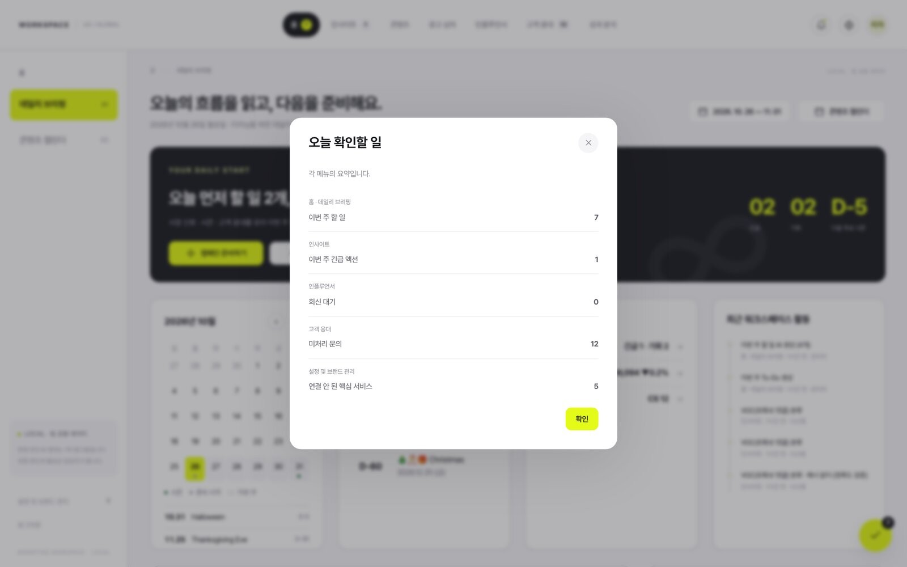
탭별 상세 — 기능 · 기술 · 효율성
모든 탭을 같은 순서로 설명합니다: 이 탭의 질문 → 하위 화면 → 주요 기능 → 사용 기술 → 효율성
효율성의 검증 상태 표기는 §10 효율성 루브릭의 기준을 따릅니다.
6.1 🏠 홈 · 데일리 브리핑
이 탭의 질문: "오늘 무엇부터 해야 하지?" 담당: 이현경
하위 화면: 데일리 브리핑 · 콘텐츠 캘린더
- 브리핑 배너"오늘 먼저 할 일 N개, Halloween D-5"처럼 한 문장 요약 + 긴급 · 기회 · 다음 시즌 D-day
- 한눈에 보기시장 신호 · 이번 주 매출 · 검토 대기 문의를 한 카드에. 누르면 해당 탭으로 이동
- 미국 시장 브리핑구글 뉴스에서 미국 주류 · 경쟁 브랜드 · 규제 기사 중 REBOOT와 관련 있는 것만 골라 마켓 레터 형식으로
- 이번 주 할 일할 일마다 근거(예: "알디콤 리뷰 불만 1위는 효과")와 담당 메뉴 링크가 붙은 목록
- 콘텐츠 캘린더Halloween · Thanksgiving · Christmas · Super Bowl 등 미국 시즌과 준비 시작일 표시
- 다음 급등 예상작년 같은 시기 Google 검색 추이로 곧 뜰 시즌을 미리 안내
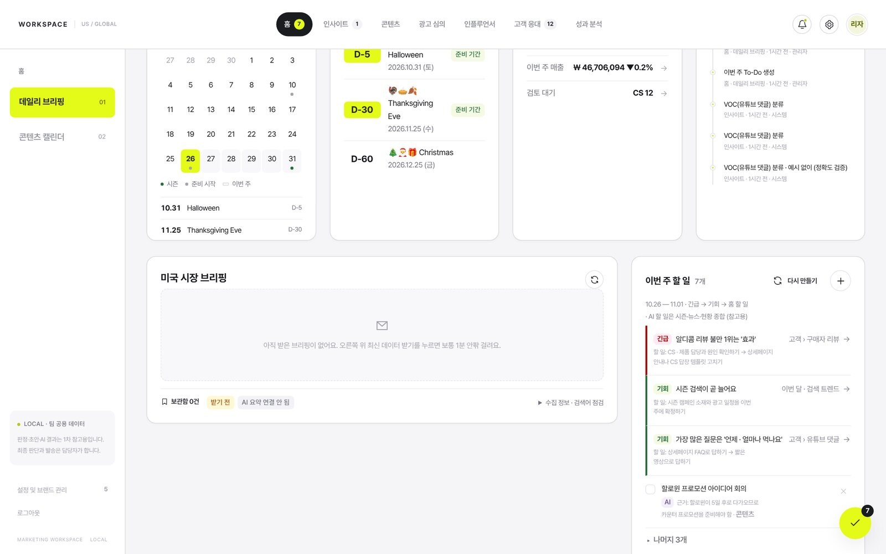
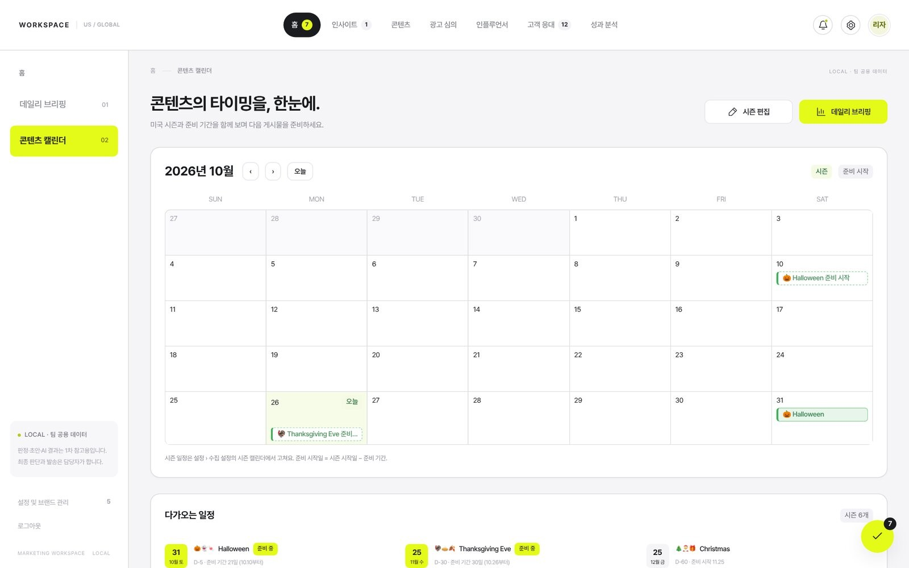
사용 기술: OpenAI gpt-4o-mini (뉴스 선별 · 한 줄 요약 · 이번 주 할 일 생성 — 키가 없으면 규칙으로 할 일 생성) · 구글 뉴스 RSS · 다른 탭의 요약 숫자(성과 · CS · 콘텐츠)
효율성
| 기존 방식 | REBOOT | 아낀 시간으로 하는 일 | 검증 상태 |
|---|---|---|---|
| 미국 주류 뉴스를 직접 검색해 영어 기사를 읽고, 시즌 날짜를 따로 챙기고, 할 일을 메모 | 시즌 D-day · 뉴스 한국어 요약(하루 1회 자동) · AI가 묶은 이번 주 할 일이 한 화면에 | 아침부터 그날 할 일에 바로 착수, 시즌 준비 시작일(할로윈 21일 전)을 놓치지 않음 | 미측정 |
6.2 🔍 시장 · 고객 인사이트
이 탭의 질문: "경쟁사는 얼마에, 무슨 말로 팔고 있고, 고객은 무엇에 만족 · 실망하나?" 담당: 이현경 · 원칙: 판단(등급 · 숫자)은 규칙이 하고, AI는 문장만 씁니다.
하위 화면: 이번 주 · 이번 달 · 시장 · 고객 · 데이터 관리
- 이번 주 액션긴급 · 기회 · 참고 등급의 할 일 카드. "사실 → 영향 → 할 일" 순서, 펼치면 근거와 담당 메뉴
- 액션 생성 규칙경쟁사 가격 ±10% 변동, 경쟁 제품 품절 · 재고 20개 이하 · 재입고, 자사 리뷰 불만 1위, 시즌 검색 급증 등 정해진 규칙으로 등급 결정
- 이번 달AI 3줄 요약 · 개선 우선순위(불만 주제 × 심각도) · 고객 페르소나 3명 · SWOT · 콘텐츠 브리프
- 시장경쟁 제품 80개 · 경쟁 브랜드 39개 비교, 1회분 가격 위치(알디콤 $0.96), 위협 · 기회 · 관찰로 나눈 경쟁사 변화
- 고객자사 리뷰 127개 평점 · 주제별 칭찬 비율, 유튜브 댓글 "사기 전에 묻는 것" 순위 (1위 "언제·얼마나 먹나요" 34건)
- 데이터 관리수집값을 사람이 직접 수정, AI 분류 정확도 검증(규칙 / AI / AI+예시 방식 비교)
- 리포트주간 · 월간 리포트(Word), 수집 데이터(Excel) 다운로드
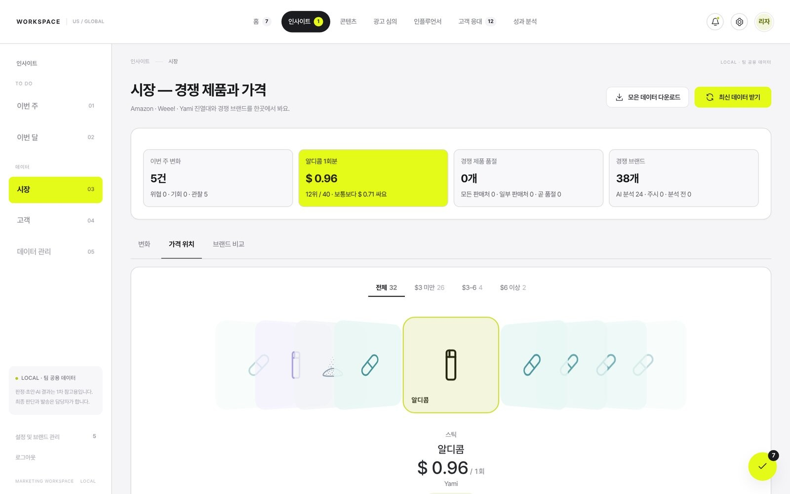
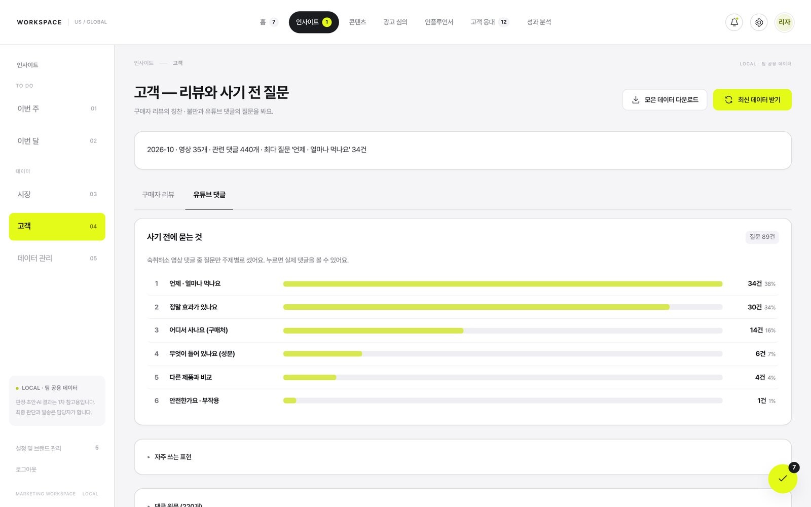
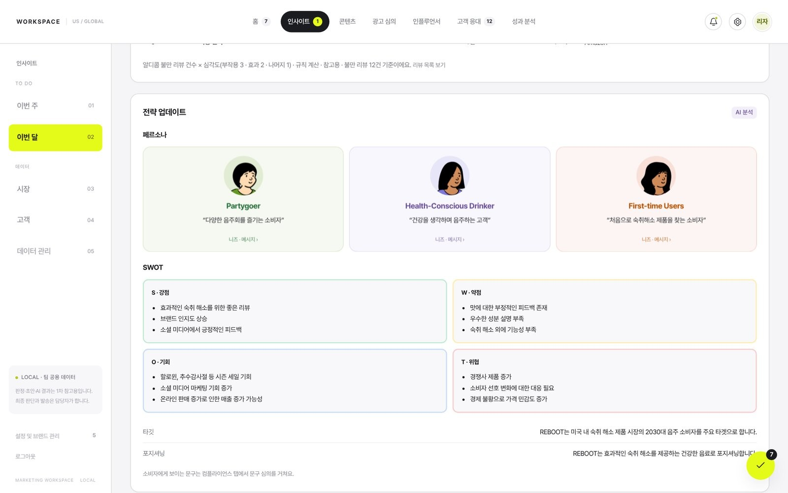
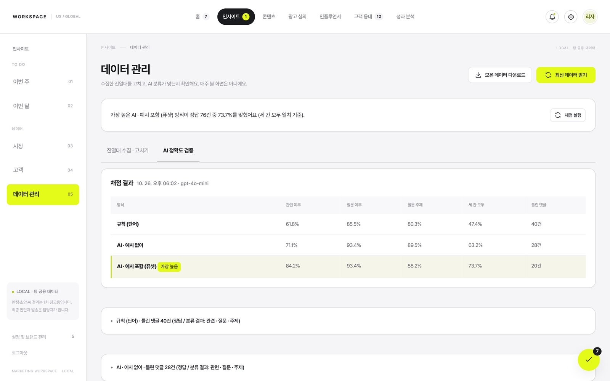
사용 기술: OpenAI gpt-4o-mini (액션 문장 · 월간 요약 · 페르소나 · SWOT · 리뷰 주제 분류 · 댓글 분류 · 경쟁사 분석) · SerpApi(Amazon · Google Trends) · Firecrawl(Weee! · Yami · Olive Young) · YouTube Data API 수집 원칙: robots.txt가 막는 곳은 수집하지 않고, 리뷰 작성자 이름은 저장하지 않음
효율성
| 기존 방식 | REBOOT | 결과 | 검증 상태 |
|---|---|---|---|
| 판매처마다 들어가 경쟁 제품 가격 · 재고를 확인하고, 리뷰 · 댓글을 읽고, 검색 트렌드를 따로 봄 | AI 자동 수집 → 경쟁 진열대 · 리뷰 확인 → 주간 리포트까지 | 13분 → 3분 (Amazon 상품 10개 기준) | 실측 완료 · 추가 검증 필요 |
수작업은 가격 · 브랜드 · 형태 · 개입 수 4개 항목만 기록했고, REBOOT는 리뷰 확인과 주간 리포트까지 했습니다. 두 작업의 범위가 달라 같은 과업 기준의 비교는 다시 측정할 예정입니다.
6.3 ✍️ 콘텐츠 제작
이 탭의 질문: "한 번 입력으로 채널에 맞는 콘텐츠를 빨리, 규제에 걸리지 않게 만들 수 없나?" 담당: 이나원

하위 화면: AI와 함께 제작 · 내 캠페인
- 기본 정보 시트만들 콘텐츠(이미지 · 카드뉴스 · 숏폼 영상 · 고객 안내 메시지) · 게시 채널 · 제작 대상(브랜드 또는 제품 여러 개) · 언어 · 목적 · 추가 요청만 고르면 시작
- REBOOT AI와 대화한 번에 질문 하나 + 서로 다른 추천 답 3개를 카드로. 이미 시트에 적은 것은 다시 묻지 않음
- 기획 메모콘셉트 · 강조 내용 · 비율 등 항목마다 "정함 / AI 추천 / 아직"을 실시간 표시
- 초안 3안 · 부분 수정A · B · C 3안 생성. "B안 더 짧게", "2장만", "배경만 검정으로"처럼 지정한 부분만 새 버전으로 고치고 원본은 보존
- 이미지 · 숏폼 영상제품 사진을 참고해 이미지 생성 · 편집. 숏폼은 구성안(대본 · 장면 · 자막) 또는 실제 영상(Seedance 2.0, 720p · 4~15초)
- 카드뉴스 편집기비율 · 장 수 · 템플릿을 고르고 글자 · 사진을 직접 수정 → 카드별 PNG 저장
- 캡션 · 해시태그채널별 캡션 3안과 해시태그 추천 (Instagram 5~8개 · TikTok 3~5개)
- 게시 전 체크만든 콘텐츠마다 키워드 확인 · 광고 심의 엔진 점검 · AI 보조 검토를 나눠 보여 주고, 가장 나쁜 결과를 한 줄로 표시
- 내 캠페인종류 · 상태별 폴더, 버전 기록 · 복원, 다른 채널로 복제, ZIP 내보내기


사용 기술: OpenAI gpt-4o-mini (대화 · 초안, 정해진 JSON 형식으로만 출력) · OpenAI 이미지 모델 (생성 · 편집) · Higgsfield (제품 사진 참고 이미지 · Seedance 2.0 영상) 안전 장치: AI는 제품 사실(가격 · 성분)을 바꿀 수 없음 · 명확한 요청이나 버튼이 있을 때만 생성 · 같은 요청 두 번 실행 방지 · 유료 생성은 자동 재시도하지 않음
효율성
| 업무 (1건) | 기존 (수작업) | REBOOT | 절감 | 검증 상태 |
|---|---|---|---|---|
| 카드뉴스 | 7분 28초 | 2분 38초 | 4분 50초 · 64.7% | 실측 · 완료 조건 충족 |
| 이미지 | 11분 16초 | 5분 19초 | 5분 57초 · 52.8% | 실측 · 완료 조건 충족 |
완료 조건: AI 2차 검토를 거친 최종본에 위험 문구가 남지 않을 것. 같은 40분이면 카드뉴스를 5개 대신 15개 만들어 소재를 시험할 수 있습니다(1건 실측값을 반복 적용한 환산값).
6.4 🛡️ 광고 심의 (컴플라이언스)
이 탭의 질문: "이 영어 문구, 미국에서 써도 되나? 안 되면 뭐라고 써야 하나?" 담당: 소준희 · 원칙: 근거 없이 "위험합니다"만 말하지 않고, 이유 · 근거 · 대신 쓸 표현을 함께 보여 줍니다.
하위 화면: 문구 점검 · 점검 기록 · 규제 소식 · 참고 자료 · 운영 설정
- 문구 점검영어 문구를 쓰면 즉시 점검, 걸린 표현에 빨간 밑줄. 한국어로 쓰면 뜻 그대로 번역한 뒤 점검
- 판정 5단계사용 불가(BLOCK) · 수정 필요(REVISE) · 조건 확인(COND) · 담당자 검토(REVIEW) · 규칙 미탐지(PASS)
- 대체 문장예: "Prevents hangovers." → After-Party · Reset · Refresh 같은 말로. 사용 불가 문구는 복사 버튼이 없음
- AI 2차 심의규칙이 놓친 돌려 말하기 · 암시 표현을 AI 검토자가 한 번 더 확인
- 검토 요청서걸린 규칙을 엑셀로 묶어 법무 · 품질팀에 메일 발송, 1회용 회신 링크로 승인 · 수정 · 반려를 받음
- CSV 일괄 심의최대 500줄을 한 번에 판정
- 점검 기록판정별로 팀 공용 저장 (최근 1,000건)
- 규제 소식FDA · FTC · 법원 등 공식 출처를 하루 1회 수집, 새 항목 표시. 경고장 속 문구는 "사례 후보"로 들어와 사람이 승인해야 규칙 검증에 반영
- 참고 자료심의 규칙 17개와 대체 방향, 한국 → 미국 표현 매핑 20쌍, 성분 표현 38개
심의 규칙 R1~R17 (일부)
| 코드 | 이름 | 판정 | 걸리는 예 → 대신 쓸 방향 |
|---|---|---|---|
| R1 | 질병 · 치료 주장 | BLOCK | cure, prevent, relief, detox → 섭취 시점 · 맛 · 포맷 등 사실 묘사 |
| R2 | "hangover" 직접 언급 | BLOCK | hangover, morning after → After-Party · Reset · Refresh |
| R3 | 안전성 보장 · 간 보호 | BLOCK | protect your liver → 라벨 확인 + 전문가 상담 안내 |
| R6 | 음주 조장 | REVISE | drink all night → 음주량 언급 안 함 |
| R14 | 정부 승인 · 인증 주장 | BLOCK | FDA approved → 확인 가능한 사실 |
| R17 | 제품 사실과 다른 표현 | BLOCK | mango flavor, 6 bottles → 사양서 기준 사실 |
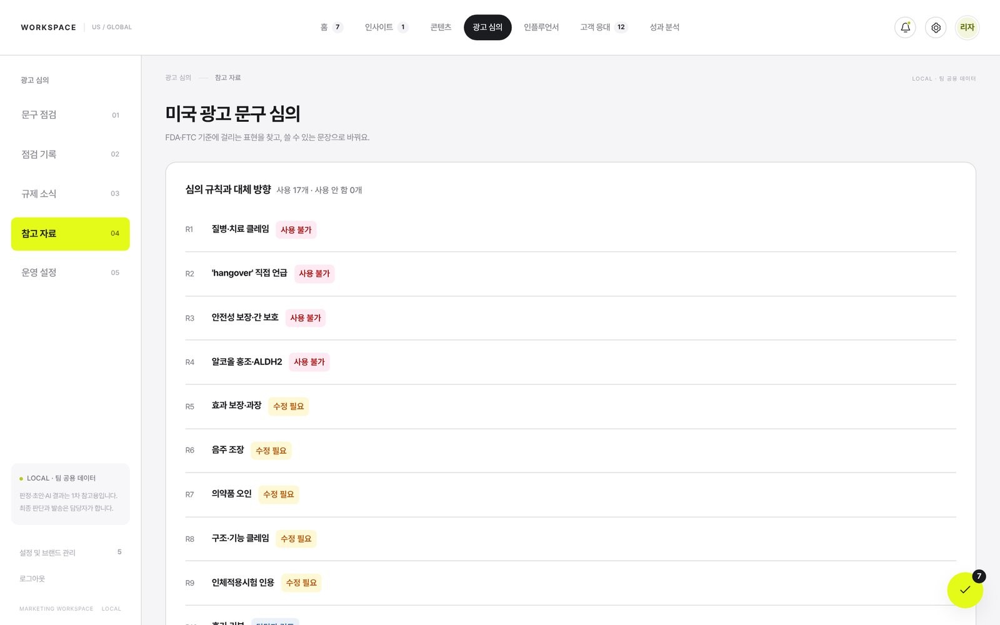
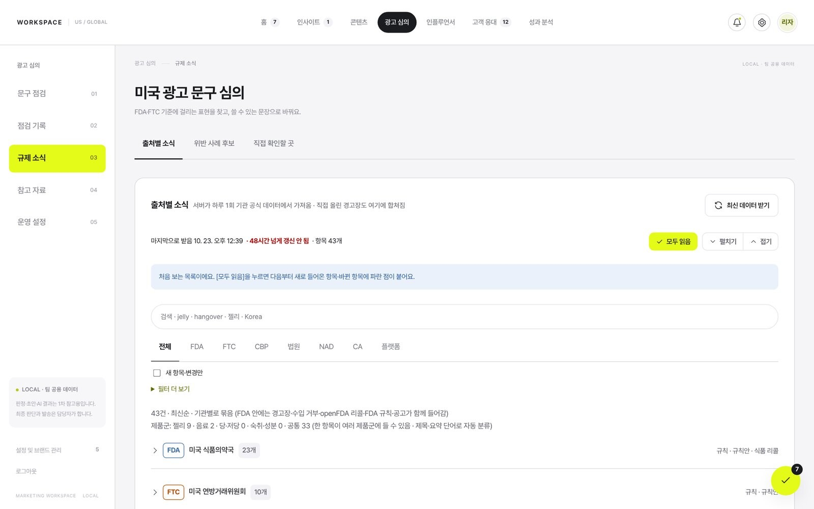
사용 기술: ① 규칙 엔진(R1~R17, 같은 입력엔 항상 같은 결과) → ② AI 2차 판정(Anthropic Claude) → ③ 사람이 최종 결정. AI가 규칙보다 느슨하게 보면 규칙 판정이 이깁니다. 외부 데이터: openFDA · FDA Data Dashboard · Regulations.gov · Federal Register · CBP CROSS · CourtListener · Firecrawl(NAD · FTC 보도자료 · Prop 65) 규칙 정확도 시험: FDA 경고장 원문 87개 중 놓친 것 0 · 안전 문구 15개 중 잘못 막은 것 0
효율성
| 업무 (1건) | 비교 대상 | REBOOT | 절감 | 검증 상태 |
|---|---|---|---|---|
| 광고 문구 1차 검토 | 일반 Gemini 4분 30초 | 1분 | 3분 30초 · 77.8% | 실측 완료 · 추가 검증 필요 |
문구 1차 검토만 잰 값입니다. 검토 요청 · AI 2차 검토 · 최종 승인 시간은 포함하지 않았고, 위험 표현 탐지 정확성은 추가로 확인할 예정입니다. 심의 결과는 법적 승인이 아니며, 최종 집행 전 전문가 검토를 권장합니다.
6.5 🤝 인플루언서 · 파트너
이 탭의 질문: "누구에게 연락하고, 무엇을 어떻게 제안하며, 금지 표현은 어떻게 알려 주나?" 담당: 권혁주
하위 화면: 파트너 찾기 · 협업 관리 · 제안 작성 · 성과
- 파트너 찾기업체 123곳(케이터링 50 · 인플루언서 73) 필터 · 검색, 유튜브 크리에이터 추천(구독자 · 평균 조회수)
- 협업 관리진행 상태 보드 6단계(컨택 → 협의 → 협업 → 마케팅 → 완료 / 보류), Gmail 회신 · 반송 자동 확인, 회신 AI 요약 · 답장 초안
- 제안 메일한국어로 조건 입력 → 영어 메일 자동 작성 → 광고 심의 점검 → 확인 체크 후 발송
- 협업 가이드고정 8개 절 가이드, 광고 심의의 금지 표현으로 Do & Don't 자동 작성 → Word로 메일 첨부
- 성과크리에이터별 접속 · 주문 · 매출 · 전환율 (홈페이지 판매 데이터 연동)
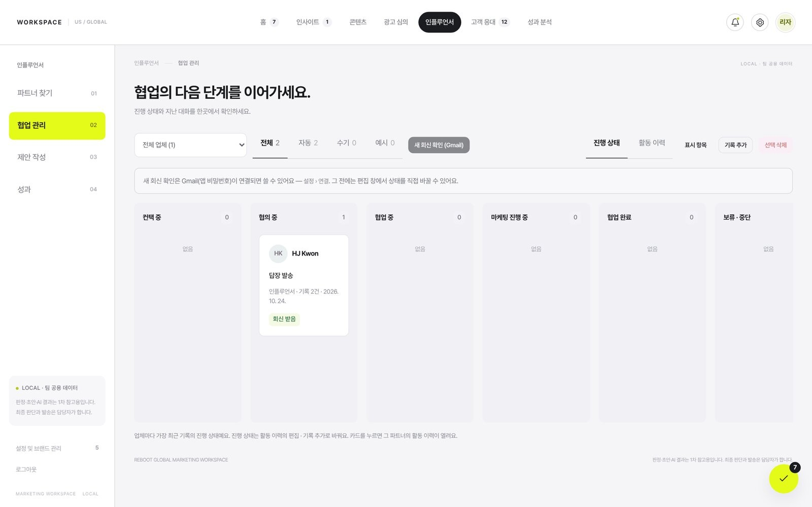
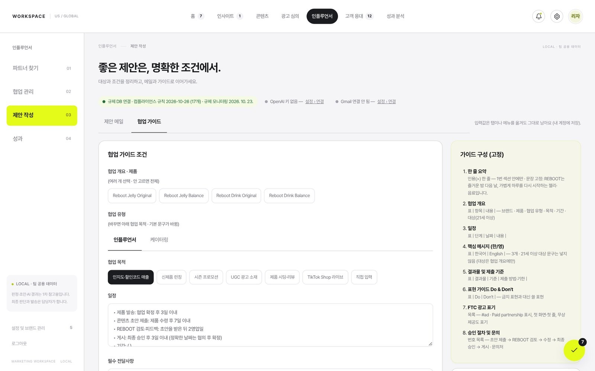
사용 기술: OpenAI (제안 메일 · 협업 가이드 · 번역 · 회신 요약 · 답장 초안 · 유튜브 키워드 추천) · Gmail SMTP(발송) · IMAP(회신 확인, 읽기 전용) · YouTube Data API
효율성
| 기존 방식 | REBOOT | 아낀 시간으로 하는 일 | 검증 상태 |
|---|---|---|---|
| 업체를 검색해 연락처를 엑셀에 모으고, 영어 제안 메일 · 가이드를 직접 쓰고, 회신을 메일함에서 찾음 | 업체 선택 → AI 제안 메일(광고 심의 점검) · 가이드 · 회신 · 이력 · 크리에이터 실적이 한 곳에 | 판매 실적을 보고 다음 협업 상대를 고르고, 관계 관리에 시간을 씀 | 미측정 |
6.6 💬 고객 응대 (CS)
이 탭의 질문: "고객 문의에 빠르게 답하되, 답장 속 표현이 규제에 걸리지 않게 할 수 없나?" 담당: 소준희 · 원칙: 자동 발송은 없고, 모든 답장은 문구 검토와 담당자 검토를 거칩니다.
하위 화면: 문의함 · 부작용 접수 · 고객 기록
- 자동 분류Gmail 문의를 10가지 유형으로 분류 (C1 부작용 신고 · C3 환불 · C5 배송 · C10 협업 제안 등), 긴급 · 기한 초과 표시
- 4단계 처리답장 쓰기 → 문구 검토 → CS 검토 → 보내기
- 유형별 템플릿영어 답장 초안 + AI 다듬기(고객경험 매니저 'Hana' 페르소나)
확인 필요빈칸모르는 사실은[확인 필요: 품질팀 회신 기한]처럼 노란 밑줄로 남기고, 모두 채워야 다음 단계로- 발송을 막는 5가지사용 불가 표현 있음 ·
확인 필요남음 · 담당자 승인 전 · 지정 담당 추가 검토 전 · 승인한 본문과 다름 - 부작용 접수로트 번호 · 섭취일 · 진료 여부 · 증상 기록, 심각 여부 판단 후 품질관리 담당자에게 보고
- 고객 기록보낸 사람별 문의 묶음과 주의 신호 (사실만 표시, 악성 고객으로 단정하지 않음)
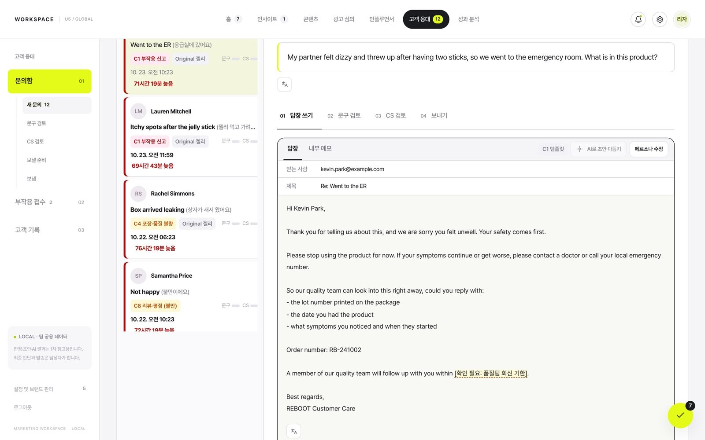
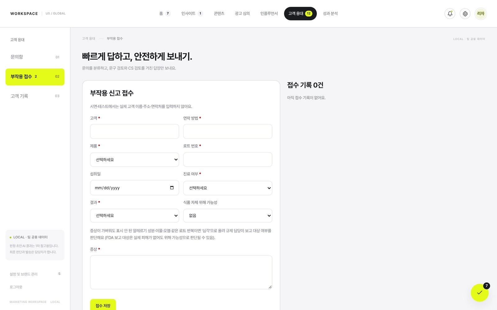
사용 기술: Anthropic Claude (Hana 페르소나 답장 다듬기, 예시 3개로 쓰는 방식 고정) · Gmail API (Google 로그인)
효율성
| 업무 | 수작업 기준 (업계 자료) | REBOOT (환산) | 검증 상태 |
|---|---|---|---|
| 문의 1건 응대 | 약 8분 | 2.8~3.8분 | 가정 기반 환산 |
| 주간 문의 통계 정리 | 주 4~5시간 | 주 1.4~2.4시간 | 가정 기반 환산 |
실제로 잰 값이 아닙니다. 업계 자료의 수작업 시간에 콘텐츠 탭의 실측 절감률(52.8~64.7%)을 적용한 계산이며, 다음 측정 1순위로 실제 문의 10건을 두 방식으로 처리해 바꿀 예정입니다.
6.7 📊 성과 분석
이 탭의 질문: "어느 채널에 돈을 더 쓰고 덜 써야 하나?" 담당: 권혁주
하위 화면: 성과 대시보드 · 주간 성과 보고서
- CSV 업로드채널별 광고비 · 매출 CSV를 올리면 합치기 · 전체 바꾸기 (덮어쓰기 전 자동 백업)
- 핵심 지표 6개광고비 · 매출 · ROAS · 전환 · CPA · 순수익 + 전주 대비 증감
- 채널별 성과 표원화 · 달러 전환(한국수출입은행 환율), ROAS 최고 · 최저 배지
- 잘한 점 · 개선할 점숫자 기준으로 자동 작성
- AI 예산 제안채널별 다음 주 예산 · 근거 · 실행 과제. 예산 총액은 서버가 현재 광고비 ±20% 안으로 보정
- 주간 보고서A4 보고서 미리보기 → PDF 저장, 팀장 보고에 바로 사용
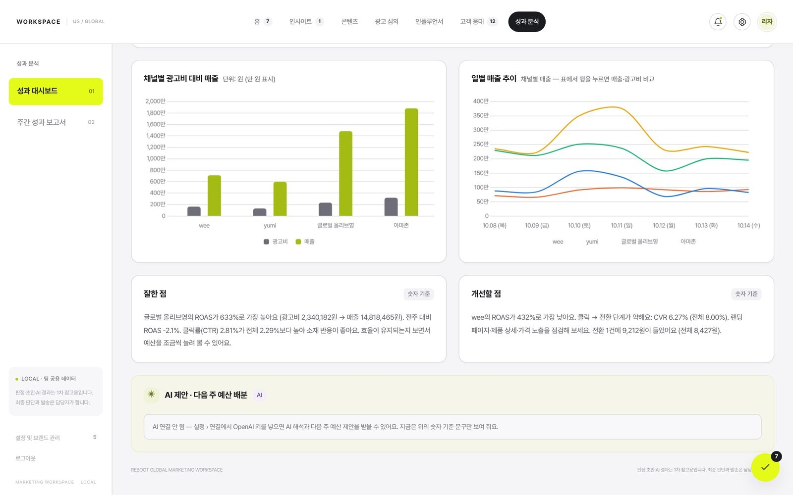
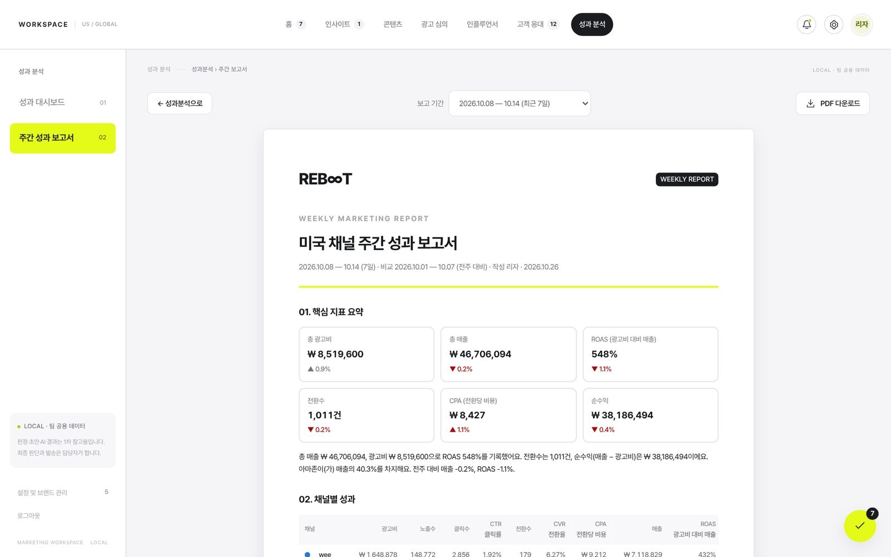
사용 기술: OpenAI (성과 해석 · 예산 제안 · 인사이트 3줄) · 한국수출입은행 환율 API · Chart.js. 지표 계산식은 화면과 서버가 같은 식을 사용 (ROAS = 매출 ÷ 광고비 × 100 등)
현재 화면의 숫자는 예시 CSV이며, 화면과 보고서에 "예시 데이터"로 표시됩니다.
효율성
| 기존 방식 | REBOOT | 아낀 시간으로 하는 일 | 검증 상태 |
|---|---|---|---|
| 채널마다 광고비 · 매출을 내려받아 엑셀로 ROAS · CPA를 계산하고, 차트와 보고서를 따로 만듦 | CSV 업로드 → 지표 · 표 · 차트 · 예산 제안 · A4 보고서 | 계산 대신 다음 주 예산을 어디에 둘지 판단 | 미측정 |
6.8 ⚙️ 설정 및 브랜드 관리
이 탭의 역할: 모든 탭이 같은 기준으로 움직이도록 하는 단일 원본. AI가 제품 사실을 지어내지 않게 하는 기준점입니다. 담당: 이현경
하위 화면: 브랜드 · 제품 · 수집 설정 · 연결 · 작업 기록 · 계정
- 브랜드 · 제품 정보 시트모든 탭과 AI가 쓰는 제품 4종의 기준 정보. 출처 없이 "확인 완료"로 저장하면 서버가 거절
- 수집 설정수집 대상 켜기 · 끄기, 검색어 · 추적 상품, 예상 사용량, 미국 시즌 캘린더 편집
- 연결API 키 입력 · 연결 테스트. 키는 암호화 저장, 끝 4자리만 표시, 저장 후 다시 볼 수 없음
- 작업 기록수집 · AI 프롬프트 · 승인 기록. AI 호출마다 모델 · 토큰 · 보낸 프롬프트 · 받은 응답을 그대로 기록 (수정 · 삭제 불가)
- 계정로그인 5회 실패 시 10분 잠금 · 관리자의 계정 추가 · 권한 관리
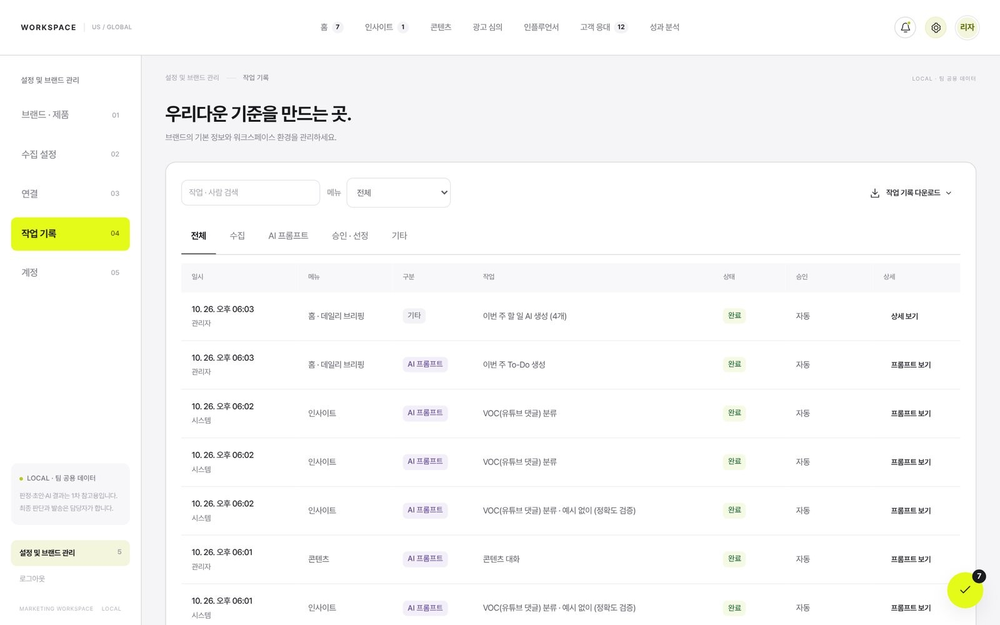
효율성: 직접 시간을 줄이는 탭이 아니라, 다른 탭들의 결과가 같은 사실 · 같은 기준에서 나오도록 받치는 기반 탭입니다. 누가 언제 무엇을 했는지 추적할 수 있습니다.
탭 간 연결 — 하나의 업무 흐름
인사이트에서 찾은 고객의 말
↓ (승인된 콘텐츠 브리프 · 고객 페르소나)
콘텐츠 제작 — 채널별 카피 · 이미지 · 영상
↓ (모든 문구 자동 점검)
광고 심의 엔진 ←── 인플루언서 제안 메일 · 협업 가이드 · CS 답장도 같은 규칙
↓
성과 분석 — 결과 확인
↓
홈 — 다음 주 할 일로 정리
- 광고 심의무엇을 문구 판정 엔진 · 금지 표현 목록받는 탭 콘텐츠 · 고객 응대 · 인플루언서 · 인사이트
- 설정무엇을 브랜드 · 제품 사실 · 시즌 캘린더받는 탭 모든 탭 · 모든 AI
- 인사이트무엇을 검색 트렌드 · 고객 페르소나 · 승인된 콘텐츠 브리프 · 시장 신호받는 탭 홈 · 콘텐츠
- 성과 분석무엇을 이번 주 매출 · ROAS 요약받는 탭 홈
- 콘텐츠무엇을 진행 중인 캠페인 수받는 탭 홈
- 고객 응대무엇을 미처리 · 긴급 문의 수 · 협업 제안(C10) 문의받는 탭 홈 · 인플루언서
규제 판정 엔진은 하나만 두었습니다. 그래서 콘텐츠에서 만든 문구든, 인플루언서 메일이든, 고객 답장이든 탭마다 기준이 달라지지 않습니다.
팀 협업 방식 — GitHub와 RULE.md
팀원들이 7일 동안 하나의 저장소에서 8개 탭을 동시에 개발했습니다. 충돌 없이 진행하기 위해 사람도 AI도 같은 규칙 파일 하나(RULE.md)를 따르는 방식으로 협업했습니다.
8.1 꼭 지킬 5가지 (RULE.md §0)
-
내 탭 폴더만 고친다. 공통 폴더(
server/,core/)는 PM과 상의한다. -
내 이니셜 브랜치에서만 작업한다.
main·pre_main에는 직접 올리지 않는다. - 작업 시작 전에 항상
pre_main최신 내용을 가져온다. -
비밀 키는
.env에만 넣는다. 커밋 · 메신저 · AI 채팅에 올리지 않는다. (공개 저장소) - AI에게 시킬 때도 이 규칙을 따르게 한다. 파일을 바꾸기 전에 무엇을 바꿀지 먼저 보여 달라고 한다.
8.2 브랜치 전략
내 브랜치(NW) ── PR ──▶ pre_main ── PR (PM 병합) ──▶ main ──▶ Render 자동 배포
main최종 안정 버전. 배포는 main에서만pre_main모두의 작업이 모이는 곳 (기본 브랜치)- 이니셜 (
NW,JH…)각자의 작업 공간. 병합돼도 지우지 않고 계속 사용 hotfix/이니셜-내용main이 고장 났을 때만
- 한 PR에는 한 탭의 작업만 담습니다. rebase · force push는 쓰지 않고, 충돌은 merge로 풉니다.
- 각자 PC에 push 차단 훅(
pre-push)을 설치해, 실수로main·pre_main에 직접 push하는 것을 막았습니다. - 커밋 메시지는
feat:·fix:·docs:·chore:+ 한국어 한 줄로 통일했습니다.
8.3 PR · 검토 · 병합
PR 본문 양식 — 모든 PR에 같은 6칸을 적었습니다.
## 무엇을 바꿨나요
## 바꾼 파일
## 확인한 것 (테스트 통과 수, 직접 본 화면)
## 공통 영역·다른 탭 영향 (없음 / 있음)
## 패키지·환경변수 변경 (없음 / 있음)
## AI 도구 사용 (없음 / 있음: 도구 이름, 쓴 부분)
- 내 브랜치 →
pre_main병합 조건 자동 테스트 통과 + 작성자가 아닌 1명 승인누가 병합 PM pre_main→main병합 조건 로컬 실행 · 주요 화면 · 테스트 · 비밀 파일 미포함 체크리스트 확인누가 병합 PM
CODEOWNERS — 파일을 고치면 GitHub이 담당자에게 자동으로 검토를 요청합니다. PM 두 명을 모든 줄에 넣어 어떤 PR이든 PM이 함께 봅니다.
* @PM1 @PM2
/tabs/content/ @콘텐츠담당 @PM1 @PM2
/tabs/compliance/ @컴플라이언스담당 @PM1 @PM2
/tabs/partners/ @파트너담당 @PM1 @PM2
...
GitHub 저장소 설정
- PR 필수
main✅pre_main✅ - 승인 1명 · 새 커밋 시 다시 승인
main—pre_main✅ - 자동 테스트 통과 필수
main—pre_main✅ - force push · 삭제 금지
main✅pre_main✅ - 병합 방식
mainMerge commitpre_mainMerge commit
- Secret scanning · Push protection 켬 (공개 저장소에 키가 올라가지 않도록)
8.4 GitHub Actions — 자동화 2가지
tests.yml언제 PR마다 · main push하는 일 ① 서버 테스트pytest② 모든 탭 JS 문법 확인node --check③ JS 단위 테스트daily-jobs.yml언제 매일 08:00 (KST)하는 일 배포 서버의 하루 1회 작업 호출 — 홈 뉴스 수집 · 규제 모니터링
결과: 7일 동안 PR 병합 100건, 마감 시점 pytest 411개 + JS 테스트 3개 파일 모두 통과.
8.5 AI 코딩 도구도 같은 규칙으로
팀원마다 Claude Code · Codex · Gemini CLI 등 다른 AI 도구를 썼기 때문에, AI 도구가 자동으로 읽는 파일에 "RULE.md를 읽어라" 한 줄만 두었습니다.
CLAUDE.md읽는 도구 Claude Code내용 "작업 전에 RULE.md를 읽고 그대로 따른다."AGENTS.md읽는 도구 Codex · Cursor 등내용 〃GEMINI.md읽는 도구 Gemini CLI내용 〃
RULE.md §10의 AI 사용 규칙:
-
읽기는 바로, 고치기는 승인 후. AI가 파일을 바꾸기 전에 아래 형식으로 먼저 보고하고 기다림
[변경 제안] - 수정: tabs/content/routes.py — 무엇을 왜 - 영향: 공통 영역·다른 탭 영향 없음 / 있음(누구) - 확인: python -m pytest, 화면 어디 진행할까요? -
commit·push·merge같은 Git 쓰기 명령은 매번 허락. force push ·main직접 push는 허락해도 하지 않음 - 직접 실행해 보기 전에는 "완료"가 아님. 바꾼 파일 · 실행한 확인 · 못 한 확인까지 보고
- 사실 · 숫자 · FDA 문구를 지어내지 않음 → 모르면
null·{확인 필요} - AI가 쓴 코드의 책임은 커밋한 사람에게 있음
8.6 탭끼리 기능을 공유하는 방식
각 탭은 다른 탭의 변수에 직접 접근하지 않고, 공개한 기능만 사용합니다. 공개한 탭이 없거나 실패해도 쓰는 쪽은 빈 값으로 넘어가도록 만들어, 한 탭의 오류가 다른 탭을 깨뜨리지 않게 했습니다.
- 광고 심의공개 기능
review(text, {channel, product})→ 판정 · 걸린 표현 · 이유 · 대안 · 근거쓰는 탭 고객 응대 · 콘텐츠 · 파트너 - 설정공개 기능
facts()·brand()·products()쓰는 탭 고객 응대 · 콘텐츠 - 홈공개 기능
seasons()쓰는 탭 콘텐츠 · 인사이트 - 인사이트공개 기능
searchTrend()·personas()쓰는 탭 홈 · 콘텐츠 - 성과 분석공개 기능
weekSummary()쓰는 탭 홈 - 콘텐츠공개 기능
campaigns()쓰는 탭 홈
AI를 틀리지 않게 쓰는 방법
미국 식품 광고 규제 때문에, 이 프로젝트에서는 AI가 없는 사실을 그럴듯하게 만드는 것(할루시네이션)이 가장 큰 위험이었습니다. 팀 전체가 아래 원칙으로 막았습니다.
- 규칙이 먼저, AI는 그다음규제 판정은 코드 규칙(R1~R17)이 하고, AI는 규칙이 놓친 돌려 말하기만 찾습니다. AI가 더 느슨하게 보면 규칙이 이깁니다.
- 모르면 빈칸으로없는 값은
[확인 필요: …]·null로 남깁니다.확인 필요가 남은 고객 답장은 서버가 발송을 거절합니다. - 사실은 한 곳에서만제품 사실은 설정 탭의 제품 정보 하나만 따르고, AI 프롬프트에는 그 값을 넣어 줄 뿐 스스로 만들지 않습니다.
- AI 출력은 서버가 다시 검증모든 AI 호출은 정해진 JSON 형식으로만 받고, 서버가 허용된 항목인지 확인한 뒤 저장합니다.
- 측정한 것만 성과로개선 효과는 같은 입력으로 비교한 경우에만 말하고, 없으면 "측정 안 함"으로 둡니다.
- 다른 AI로 교차 검토다른 AI(GPT)에게 "최대한 부정적으로" 검토를 맡기고, 지적을 다음 버전에 반영했습니다.
- 최종 결정은 사람이발송 · 게시 버튼 앞에는 항상 사람 확인 단계가 있습니다.
측정한 개선 효과
- 인사이트 — 유튜브 댓글 분류변경 판단 예시 24건 추가 (few-shot)결과 세 칸 모두 맞힘 52.6% → 75.0% (채점 76건)
- 광고 심의 — 규칙 엔진변경 FDA 경고장 원문으로 검증결과 경고장 87개 중 놓친 것 0 · 안전 문구 15개 중 잘못 막은 것 0
- 전 탭변경 할루시네이션 사례 기록결과 16건(유형 5가지) 발견 → 모두 교정 후 규칙 · 테스트 · 지침으로 고정
효율성 루브릭 — 어떻게 재고, 무엇을 확인했나
평가자: 소주주 (마케터 2년 차 · REBOOT 미국 마케팅 담당) · 측정일 2026-10-27 · 시나리오: 할로윈 캠페인
10.1 평가 방법
판정 순서
- 시간 — 같은 과업을 수작업과 REBOOT로 처리한 시간을 재고 절감률을 계산
- 완료 조건 — 업무별로 정한 조건을 충족했는지 확인 (예: 카드뉴스는 "AI 2차 검토를 거친 최종본에 위험 문구가 남지 않음")
- 경제성 — 아낀 시간 × 기준 시급(17,260원)으로 환산 (실제 급여 지출 감소가 아님)
- 근거 등급 — A 실측 · B 공개 가격 · 가정 · C 운영 시나리오 · D 사용자 의견
검증 상태 — 절감률과 따로 판단합니다. 절감률이 높다고 검증 상태가 올라가지 않습니다.
- 실측 · 완료 조건 충족직접 쟀고, 완료 조건도 충족
- 실측 완료 · 추가 검증 필요직접 쟀지만, 완료 조건이나 비교 범위가 아직 확인 안 됨
- 가정 기반 환산업계 자료 + 다른 업무의 실측 절감률을 적용한 계산
- 미측정실측도 참고 자료도 없음 → 숫자를 쓰지 않음
10.2 업무별 결과
11개 업무 중 실측 4개(완료 조건 충족 2 · 추가 검증 필요 2), 가정 기반 환산 2개, 미측정 5개입니다.
표로 자세히 보기 · 7행
| 업무 | 탭 | 기존 | REBOOT | 절감률 | 검증 상태 |
|---|---|---|---|---|---|
| 카드뉴스 1건 | 콘텐츠 | 7분 28초 | 2분 38초 | 64.7% | 실측 · 완료 조건 충족 |
| 이미지 1건 | 콘텐츠 | 11분 16초 | 5분 19초 | 52.8% | 실측 · 완료 조건 충족 |
| 광고 문구 1차 검토 | 광고 심의 | 4분 30초 (일반 Gemini) | 1분 | 77.8% | 실측 완료 · 추가 검증 필요 |
| 시장조사 (상품 10개) | 인사이트 | 13분 | 3분 | 10분 차이 | 실측 완료 · 추가 검증 필요 (범위 다름) |
| 문의 1건 응대 | 고객 응대 | 약 8분 | 2.8~3.8분 | 52.8~64.7% | 가정 기반 환산 |
| 주간 문의 통계 | 고객 응대 | 주 4~5시간 | 주 1.4~2.4시간 | 52.8~64.7% | 가정 기반 환산 |
| 영문 카피 · 기획 · 영상 · 제휴 · 성과분석 | — | — | — | — | 미측정 |
아낀 시간 환산 — 소재 10개(카드뉴스 6 · 이미지 4) 기준 52분 48초, 기준 시급 환산 15,189원 (1건 실측값을 반복 적용한 계산값)
10.3 사용자 평가 (근거 D · 평가자 1명)
- 제품 정보가 들어 있어 매번 설명하지 않아도 결과가 정확함 (가장 뚜렷한 차별점)AI 결과를 믿지 않는 사람에게는 설득력이 약함
- 화면의 가이드를 따라가면 선임 도움 없이 결과물이 나옴대화형 수정은 일반 AI 챗도 가능해 단독 차별점으로는 약함
- 경쟁 제품과 형태가 한눈에 보여 해외 판매처가 낯선 사람에게 특히 강점
10.4 다음 측정
평가자가 내부 사용자 1명이라 기대가 높게 반영될 수 있습니다. 그래서 다음 측정을 정해 두었습니다.
- 고객 응대 실측 — 실제 문의 10건을 수작업과 REBOOT로 각각 처리 (가정 기반 환산 → 실측)
- 시장조사 재측정 — 리뷰 · 보고서까지 같은 범위로 다시 측정
- 팀 밖 마케터 2~3명 사용 테스트
- 광고 심의 결과의 근거 조문마다 공식 원문 링크 추가
공식 홈페이지
reboot-us.onrender.com · 개발: 강현서 · 브랜드 소개를 넘어 자사몰 판매 · 크리에이터 매출 관리 · 고객 응대까지 처리하는 운영 플랫폼
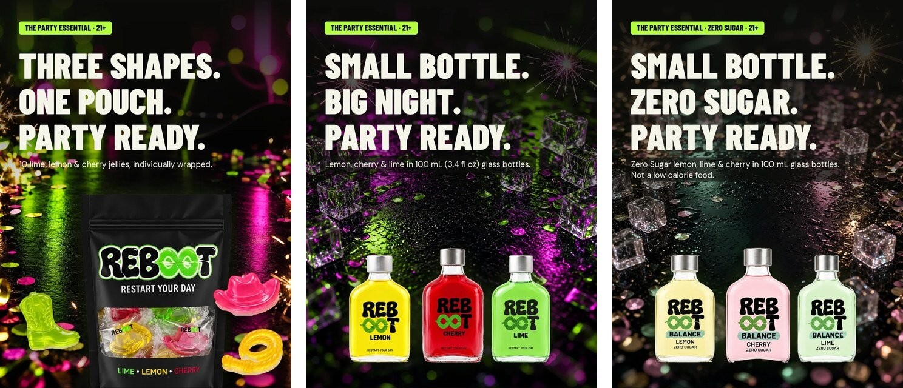
11.1 고객용 사이트
- 홈모션 히어로 → 음료 · 젤리 라인 → 게임 → 인스타그램 릴스. GSAP 스크롤 모션 · 3D 캐릭터 Rebu(Three.js)
- 제품 상세옵션 선택 · 재고 표시 · 성분, 영/한 긴 상세페이지 (실제 제품 사진 + AI 배경 + 정확한 문구 합성)
- 자사몰 구매장바구니 → 주문 → 모의 결제 → 주문 내역. 가격 · 할인은 서버에서만 계산
- 크리에이터 전용 링크
/r/코드접속 → 할인가 구매 → 해당 크리에이터 실적으로 자동 귀속 - Game (Reboot Town)픽셀 마을 미니게임 4종으로 포인트 적립 (서버가 점수 조작 검증)
- Ask Reboot 챗봇마스코트 Rebu가 제품 · 가격 · 할인 · 포인트 안내. 답변은 규제 기준으로 검사 후 노출
- 규제 대응21세 이상 확인, 효능 표현 미사용("THE PARTY ESSENTIAL · 21+"), 규제 단어가 든 리뷰는 자동 비노출
11.2 관리자 페이지 — 5개 메뉴 그룹 · 20여 개 화면
- 매출 현황상품 · 옵션별 실적, 플랫폼별 인플루언서 매출, 크리에이터 성과, 리뷰
- 상품 · 스토어상품 · 사진 관리, 상품 등록, 상세페이지, 재고 (CSV에 오류가 한 줄이라도 있으면 전체 취소)
- 마케팅 · 홈페이지크리에이터 링크 · 할인코드 즉시 발급, 상품 할인, 사이트 팝업
- 고객 지원문의함, 챗봇 질문 분석 리포트
- 설정API 연결 (OpenAI · Higgsfield)
11.3 AI 기능 6종 — 모두 같은 규제 규칙으로 검사
- ① Ask Reboot 고객 챗봇사이트 데이터를 실시간 반영해 24시간 안내. 모르는 것은 지어내지 않고 문의하기로 안내
- ② 챗봇 질문 분석질문 최대 300개를 주제 12개로 분석해 한국어 리포트
- ③ 관리자 AI 길잡이"할인은 어디서 해?" 같은 질문에 해당 화면으로 안내
- ④ AI 작업실 3종상품 등록 · 팝업 · 크리에이터 링크를 대화로 초안 완성
- ⑤ 리부 스튜디오영/한 상세페이지를 대화로 작성 · 수정 (이미지는 예상 비용을 보여 주고 허락 후 생성)
- ⑥ 새 상품 자동 상세페이지상품 등록 → 영/한 문구 + 파티 배경 5장 + 실제 제품 사진 합성 → 자동 게시
AI 안전장치: AI는 DB에 직접 쓰지 않고 초안만 만듦 · 저장은 항상 관리자가 누름 · 모든 AI 문구는 FDA 경고장 기반 규칙으로 검사해 걸리면 다시 쓰고, 그래도 걸리면 검증된 고정 문구로 대체 · 비용이 드는 생성은 사전 허락
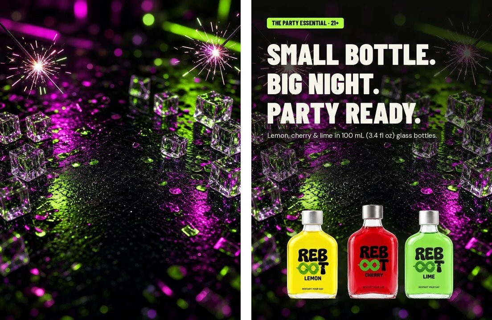
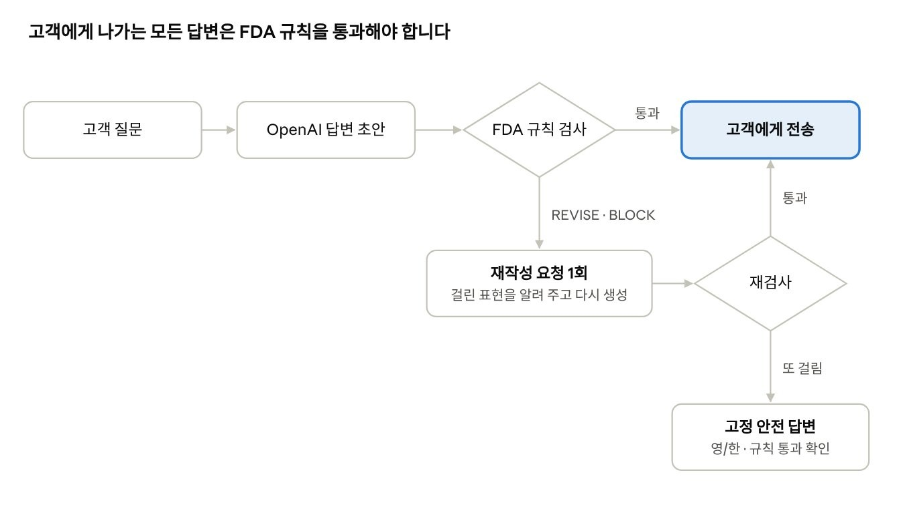
제작 원칙: AI는 배경만, 제품과 글자는 합성. AI 이미지는 패키지 로고나 문구를 틀리게 그리는 문제가 있어, AI에는 제품 · 글자 · 사람이 없는 배경만 만들게 하고 실제 제품 컷과 정확한 문구를 합성했습니다.
11.4 대시보드와의 연결
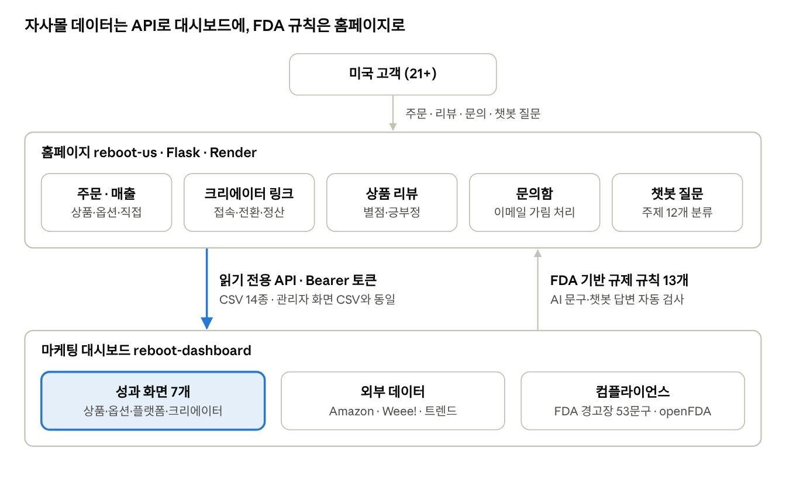
- 홈페이지 → 대시보드: 상품 실적 · 옵션별 실적 · 인플루언서 매출 · 크리에이터 성과 · 자사몰 직접 매출 · 리뷰 · 문의함 등 14종 데이터를 토큰 인증 API로 제공. 사람이 CSV를 내려받아 옮기던 수작업이 사라짐
- 대시보드 → 홈페이지: 대시보드 광고 심의의 규제 규칙을 홈페이지 AI에 적용. 같은 문장이면 두 시스템에서 같은 판정
- API와 관리자 CSV가 같은 함수를 쓰고, 자동 테스트가 두 파일을 바이트 단위로 비교 → 두 화면의 숫자가 항상 일치
- 읽기 전용 · 이메일과 전화번호는 가린 상태로 전달
11.5 기술 스택과 규모
- 서버Python 3.12 · Flask 3.1 (기능별 Blueprint) · SQLAlchemy · SQLite / PostgreSQL
- 화면Jinja2 · 바닐라 JS/CSS · GSAP · Three.js
- AIOpenAI (gpt-4o-mini · gpt-image-1) · Higgsfield API
- 배포Render · gunicorn ·
hyeonseo브랜치 → PR → main 자동 배포 - 규모Python 약 8,100줄 · 화면 템플릿 42개 · 자동 테스트 80개
- 시연용 데이터주문 3,635건 · 크리에이터 22명 · 리뷰 440건 (모두 가상 데이터로 실제 주문과 구분)
공식 인스타그램
@reboot_us · 운영: 이나원 · 대시보드와 홈페이지로 만든 브랜드를 실제 미국 고객에게 알리는 계정

- 제작 게시물91개
- 대시보드 활용게시물의 약 80%를 대시보드 콘텐츠 탭(시즌 캘린더 · 브리프 · 캡션 추천)에서 기획 · 제작
- 운영 콘텐츠숏폼 릴스 · 할로윈 시즌 캠페인("Unleash the Flavor Spirits", "Halloween with REBU") · 제품 소개(ZERO SUGAR · BALANCE 라인) · 캐릭터 Rebu로 일관된 톤
80%는 업무 시간 절감률이 아니라, 콘텐츠 제작 과정에서 대시보드를 활용한 비중입니다 (프로젝트 기록 기준). 프로필 캡처는 게시물 수가 적던 시점의 화면입니다.
REBOOT · Restart Your Day
무역 AX 2기 · 간때문이 조 · 2026.10.21 ~ 10.27